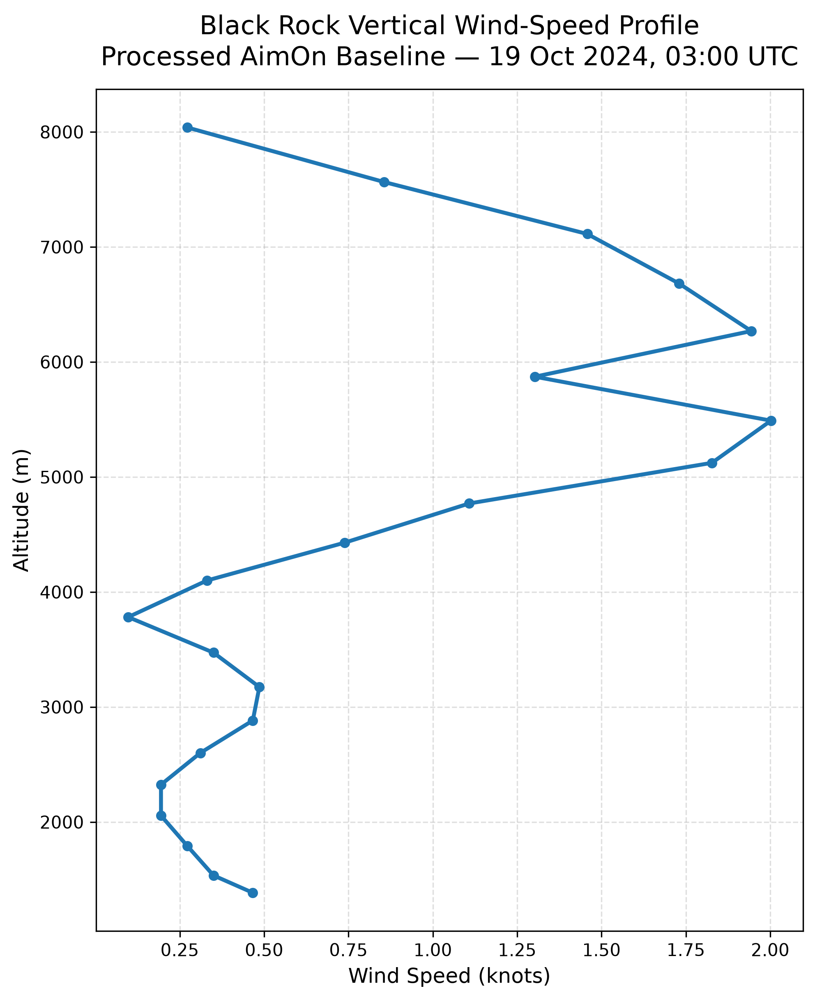
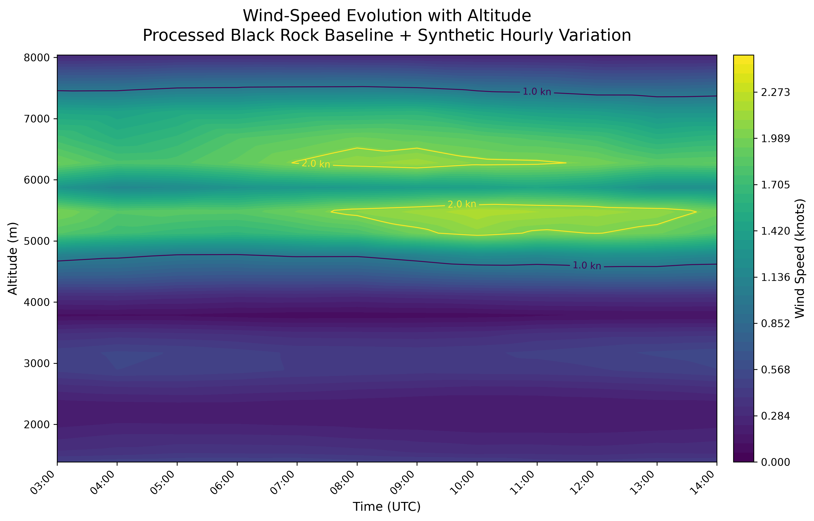
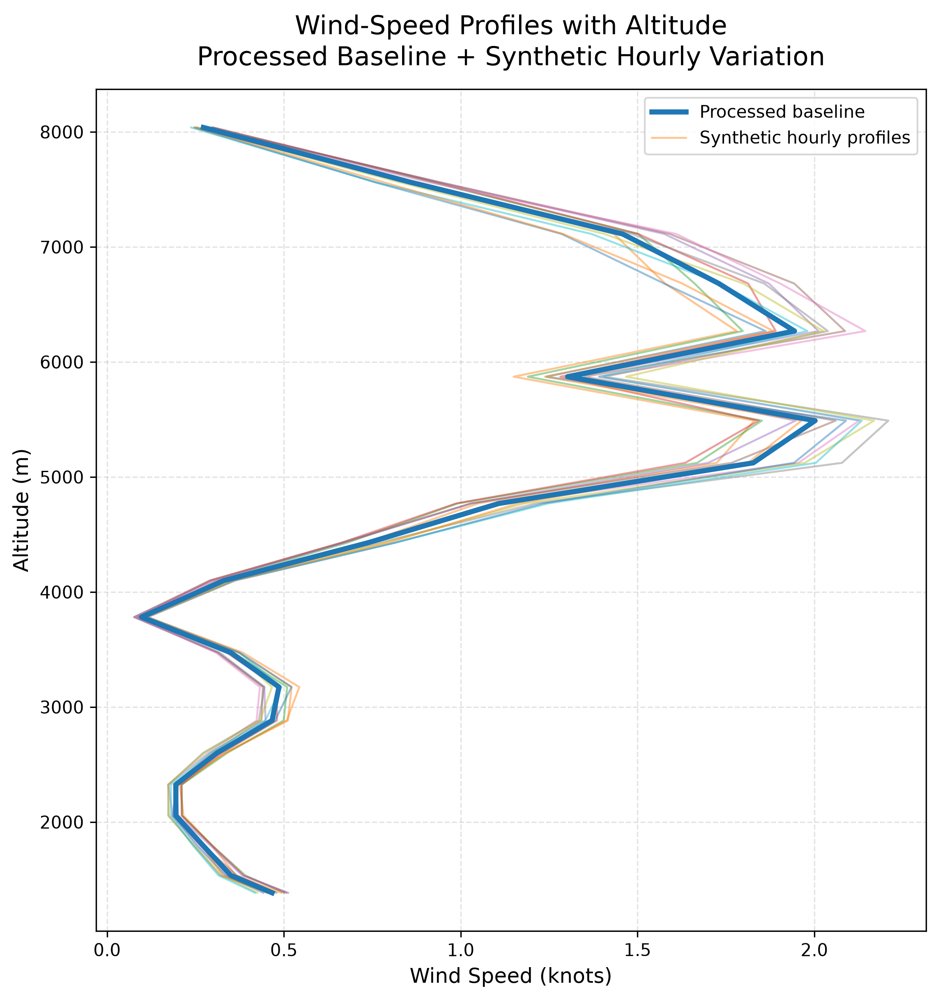

Wind Analysis and Hovmöller Visualization with AimOn
A wind-analysis demonstration showing how atmospheric wind speed varies with altitude and time, with improvements to timestamp handling, interpolation, unit conversion, color scaling, and contour visualization.
Python · Atmospheric Data · SciPy · Interpolation · Data Visualization
Context and attribution
AimOn is software developed by the USC Rocket Propulsion Laboratory team. My work focused on wind-profile visualization and atmospheric-data processing within the AimOn workflow. This portfolio demonstration was reconstructed locally from an archived Black Rock wind profile. Additional hourly profiles are synthetic and are used only to demonstrate and validate the visualization workflow.
Purpose and Contribution
The purpose of this work was to improve the presentation and interpretation of atmospheric wind data used during launch analysis. The Hovmöller workflow visualizes how wind speed changes with both altitude and time, allowing changes in the vertical wind field to be identified more clearly than with individual profile plots alone.
The local reconstruction focuses on improvements I worked on or identified within the AimOn wind-visualization workflow, including timestamp parsing, wind-speed unit handling, interpolation-grid resolution, color scaling, contour thresholds, and interpolation robustness.
Processed Black Rock Baseline
The archived Black Rock wind file contained overlapping altitude sequences. For this portfolio demonstration, the profile was processed locally to create one monotonic altitude sequence consistent with the intended AimOn model-splicing workflow. The processed profile is used only as the baseline for the visualization demonstration.

Hovmöller Wind-Speed Visualization
Because only one archived Black Rock profile was available locally, additional hourly profiles were generated synthetically around the processed baseline. These profiles are not historical RPL measurements. They are used only to exercise the time-altitude interpolation and demonstrate the plotting improvements.

Time-Varying Profile Validation
The individual wind profiles were also plotted together to verify that the synthetic variation remained close to the processed baseline and changed smoothly with time rather than introducing large discontinuities.

Visualization Improvements
- Parsed the AimOn AT timestamp explicitly so the hour encoded in the filename is retained correctly.
- Converted wind-speed values consistently into knots for plotting.
- Increased temporal interpolation resolution to provide a smoother time-altitude field.
- Replaced a diverging color map with a sequential color map better suited to nonnegative wind-speed magnitude.
- Used a dynamic color range based on the available data rather than a fixed display maximum.
- Added wind-speed contour thresholds to make atmospheric structure easier to interpret.
- Added explicit fallback handling for missing values that may remain after linear interpolation.